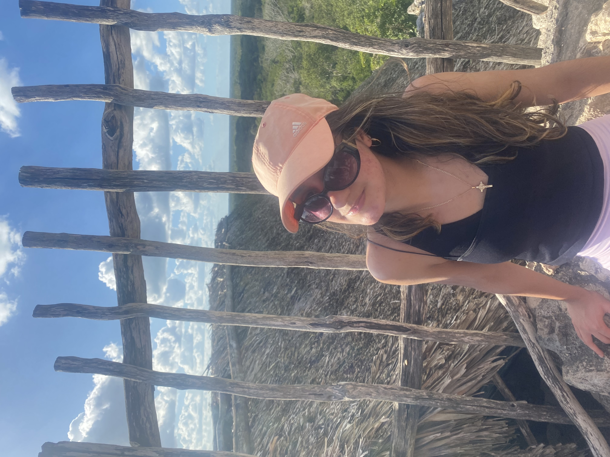
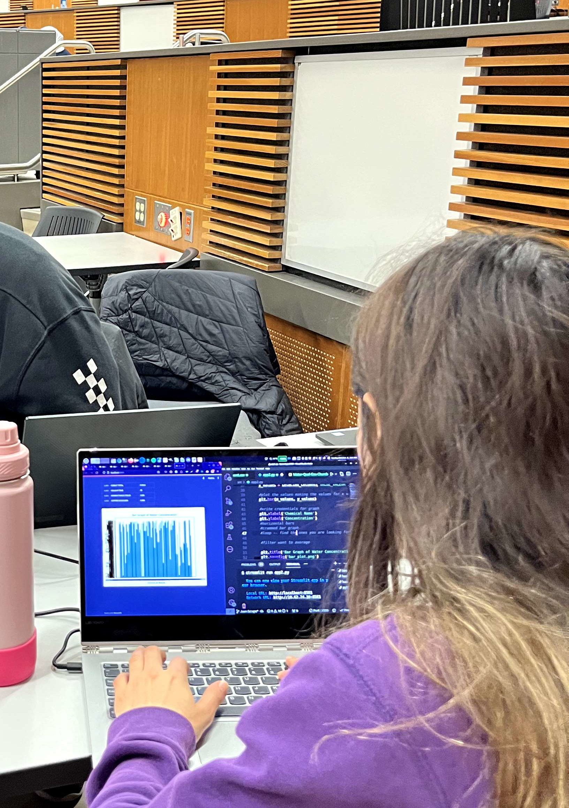
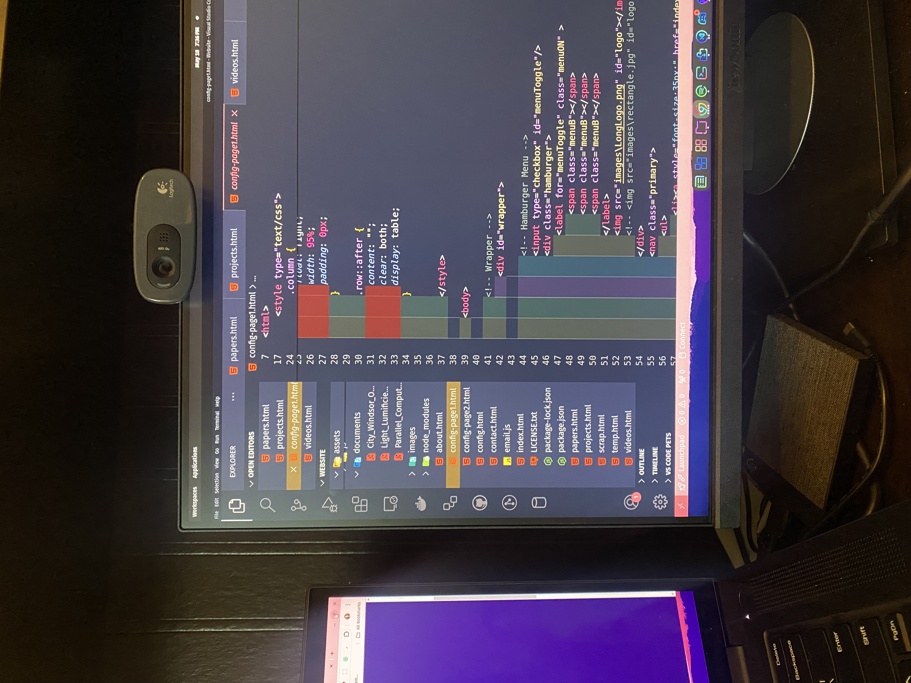
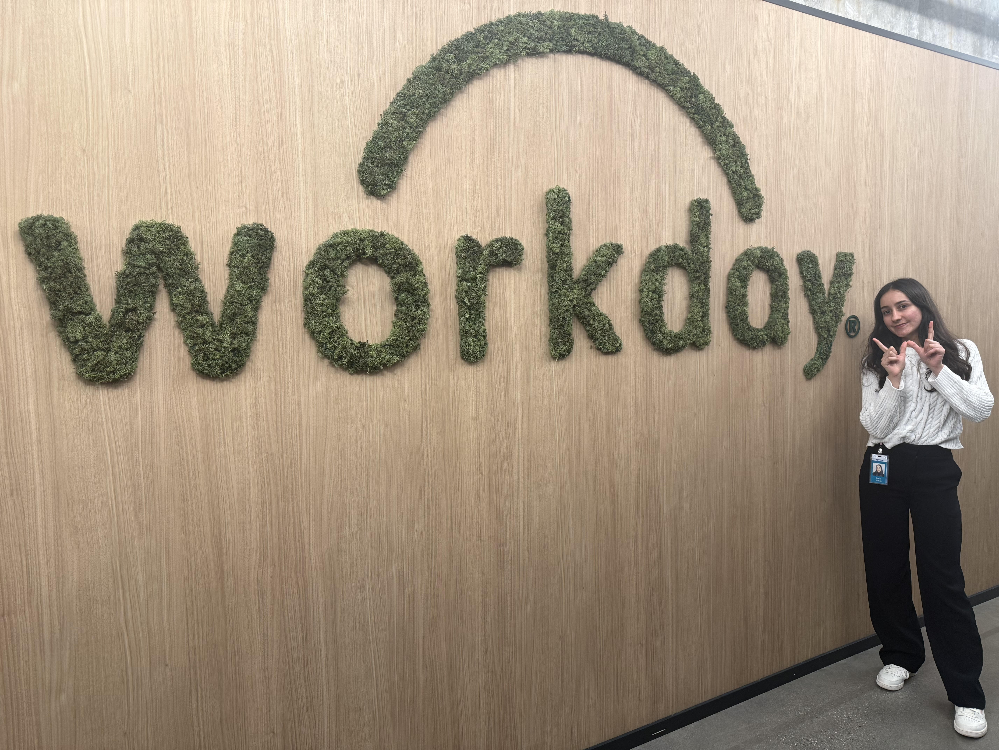

“Give your dreams all you've got, and you'll be amazed at the energy that comes out of you.”
-William James
Hi! My name is Rocio. I am 19 and I live in Windsor, Ontario, Canada. I am currently in my second year of Bachelor's of Computer Science Honours.
I have developed an interest in problem-solving and technology at a young age. It all started at age of seven, when I created a movie that draws different scenes with the paint app. Then at the age of eight, I learned Ruby and created a game that involves moving a figure left to right trying to catch snowflakes from the sky. This was one of my first step in the world of programming language in which I learned a little and felt accomplished with the creation.
During my teen ages, I developed deep interest in art. I found it very peaceful, while enjoying to experiment different techniques to realize what worked out. At age of sixteen, I started to learn digital art using the desktop app Krita. The more I learned about the various shortcuts using Krita, the more I preferred digital art over traditional. This also led me to enjoy other platforms such as Adobe Photoshop for editing my photos, Adobe Premiere Pro for video editing, and Sketchup for 3D modeling. This is the time I started to consider diving into the world of programming languages.
I finally discovered my passion for programming at the age of seventeen.
During my last year of high school, I learnt some Python and Java with the help of Youtube videos. For my Grade 12 French final project, I was tasked to work on learning or creating something in four weeks. Since I was learning Python at the time, I thought I could make a game using Python. That's where I discovered Tech with Tim's video on creating a car racing game using Pygame. I learned a couple of things in the creation of that game. This included moving a car using the keyboard and how to create boundaries for a track. Although I was still a newbie, I decided to join the Bachelor of Computer Science Honours at the University of Windsor.
I began my first year stuggling a bit with the main programming concepts, since I did not have too much experience, though this made me work even harder. I have learned many fundamentals such as procedural and object-oriented programming, discrete mathematics, algorithms and data structures. Currently, I am learning some fundamental concepts of AI, as well as Javascript and other programming languages.